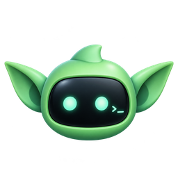

Uninstall Code Goblins
It stops Code Goblins and removes it from this PC.
- Removes
- Dev Drive
- Windows asks once for an administrator to remove it.
- Also
- Records
- The agents' records of these conversations
- Keeps
- Work not landed and your fleet data
- Leaves
- The tools it installed, which other programs may use:
- Stop Code Goblins
- Keep your work
- Remove the Dev Drive
- Remove Code Goblins
- Check that nothing is left